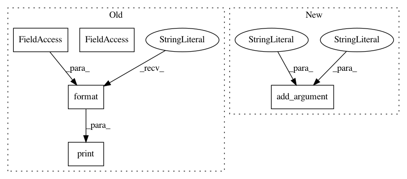

4a327c9e769bc99adc87c9464374523de89fec6c,examples/transformer/hyperparams.py,,load_hyperparams,#,22
Before Change
args.length_bucket_step,
drop_long_sequences=True,
)
print("train_src:{}".format(args.train_src))
print("dev src:{}".format(args.dev_src))
train_dataset_hparams = {
"num_epochs": args.eval_interval_epoch,
//"num_epochs": args.max_train_epoch,
After Change
help="save the eval output to file")
argparser.add_argument("--eval_interval_epoch", type=int, default=1)
argparser.add_argument("--load_from_pytorch", type=str, default="")
argparser.add_argument("--affine_bias", type=int, default=1,
help="for devendra, it"s 1; fot t2t , it"s 0")
argparser.add_argument("--eval_criteria", type=str, default="bleu")
argparser.add_argument("--pre_encoding", type=str, default="spm")
argparser.add_argument("--max_decode_len", type=int, default=256)
argparser.parse_args(namespace=args)
In pattern: SUPERPATTERN
Frequency: 3
Non-data size: 5
Instances
Project Name: asyml/texar
Commit Name: 4a327c9e769bc99adc87c9464374523de89fec6c
Time: 2018-08-08
Author: shore@pku.edu.cn
File Name: examples/transformer/hyperparams.py
Class Name:
Method Name: load_hyperparams
Project Name: asyml/texar
Commit Name: 7a3c15f348246d42495f4f54ebe14f460b775f2b
Time: 2018-04-22
Author: shore@pku.edu.cn
File Name: examples/transformer/hyperparams.py
Class Name:
Method Name:
Project Name: asyml/texar
Commit Name: 36ce15cd6b8d07cb87e4e416b304d052c343adb5
Time: 2018-06-24
Author: shore@pku.edu.cn
File Name: examples/transformer/hyperparams.py
Class Name:
Method Name: load_hyperparams